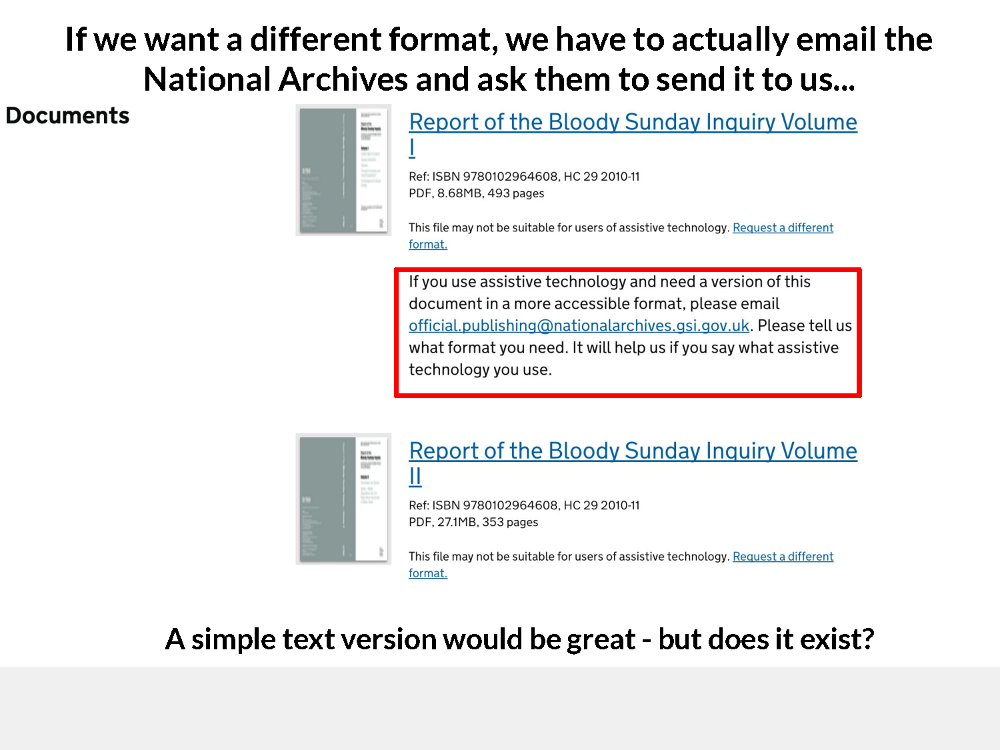

Two examples. Same failure pattern.
The problem is not abstract. These are real, high-impact reports, and they are still hard to find, hard to search, and hard to cite.
US Senate financial crisis report
Behind major journalism on 2008 lies a trail of broken links, PDF lists, and dead-end committee pages.


Saville Inquiry (UK)
A bespoke website exists, but reports and statements are text-only, fragmented, and difficult to use.


Across jurisdictions and decades, the pattern repeats: important reports exist, then decay into dead links and unusable formats.